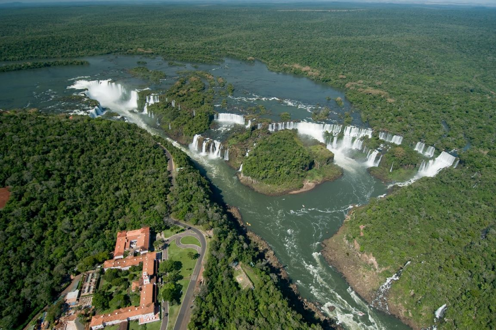
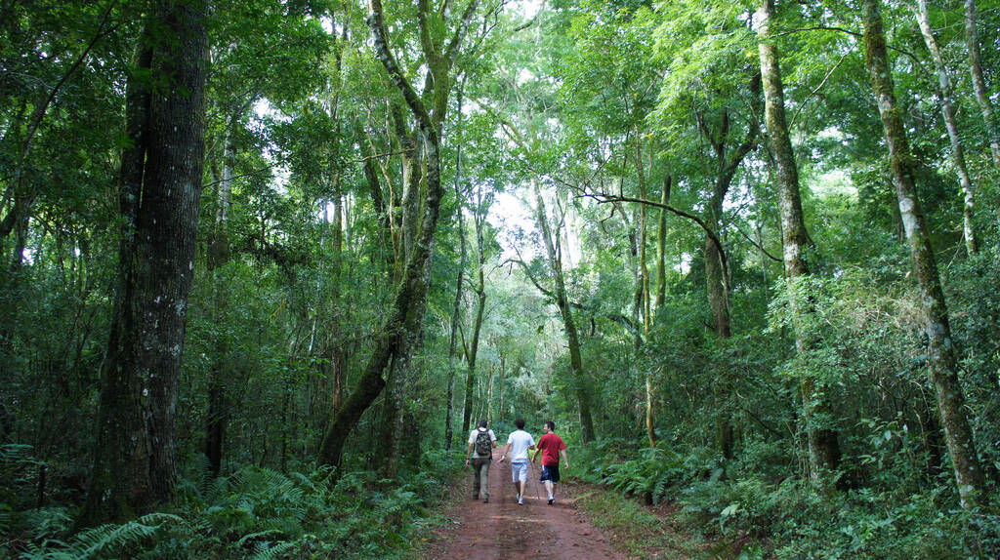

01
📝
Registrar
O cidadão poderá informar uma ocorrência ambiental, preenchendo os dados solicitados no sistema.
O Guardião Verde é uma proposta de sistema web que busca aproximar a população e a fiscalização ambiental, facilitando o registro e a organização de denúncias ambientais em Foz do Iguaçu.

Proteger o meio ambiente é uma responsabilidade compartilhada. A informação é o primeiro passo para agir.
O Guardião Verde está sendo desenvolvido como uma plataforma digital para auxiliar no registro e no gerenciamento de denúncias relacionadas a problemas ambientais.
A proposta é oferecer um espaço para que cidadãos possam informar ocorrências e disponibilizar aos fiscais ferramentas para consultar, organizar e acompanhar essas informações.
Entenda a proposta →O sistema foi pensado para organizar a comunicação entre a população e a fiscalização ambiental.
O cidadão poderá informar uma ocorrência ambiental, preenchendo os dados solicitados no sistema.
As denúncias poderão ser organizadas por categoria e localização, facilitando a visualização das ocorrências.
Os fiscais poderão consultar os registros e atualizar o andamento das denúncias conforme o trabalho de fiscalização.
As etapas representam as funcionalidades previstas na proposta do projeto.
O Guardião Verde prevê recursos para diferentes necessidades dentro do processo de registro e acompanhamento.
Cadastro, acesso ao sistema e envio de denúncias ambientais.
Classificação das ocorrências por categorias e regiões.
Visualização das ocorrências de acordo com sua localização.
Visualização de dados e indicadores relacionados às denúncias.
Quando a população encontra meios para comunicar problemas ambientais, contribui para que essas situações sejam conhecidas e possam ser encaminhadas aos responsáveis pela fiscalização.
A proposta do Guardião Verde é utilizar a tecnologia como apoio à participação cidadã e à organização das informações ambientais.

Conheça a proposta e acompanhe o desenvolvimento do projeto.